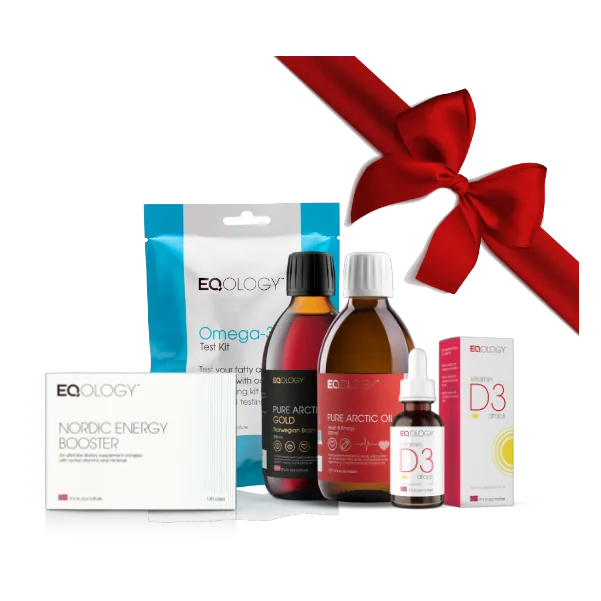

Édition limitée · NoëlCoffrets de Noël dès 109 €Ne devinez pas vos oméga‑3. Mesurez‑les.
Un test sanguin à faire chez vous, puis une huile de Norvège traçable jusqu'au bateau. Vous partez d'une mesure, pas d'un avis. Conseillés par Yves, commandés et livrés par Eqology.
- Livré chez vouspar Eqology, depuis la Norvège
- Paiement sécurisésur la boutique officielle
- Livraison offertedès deux produits de plus de 60 €
- Le conseil d'Yvesune question, une réponse
Tout pour vos oméga‑3, d'une seule marque.
Les produits par lesquels on commence.
Une mesure, pas un avis.
Le test oméga-3 se fait à la maison, analysé par un laboratoire indépendant. On repart d'un chiffre, puis on compare quelques mois plus tard.

Les coffrets de Noël.
Des cadeaux prêts à offrir, dans la limite des stocks Eqology.
Une qualité que l'on peut vérifier.
 Traçabilité
Traçabilité
Une marque norvégienne qui montre ce qu'elle met dans ses flacons.
Depuis plus de 20 ans, Eqology fabrique des compléments alimentaires basés sur des tests, à partir d'ingrédients naturels de Norvège. Siège à Oslo, pêche certifiée MSC, flacons en verre recyclables.
Lire les avis clients Eqology sur TrustpilotNous changeons la vie des personnes pour le mieux.
Chaque flacon de Pure Arctic Oil peut être suivi jusqu'au bateau et à la zone de pêche.
Vous parlez déjà santé autour de vous ? Ça peut devenir une activité.
Recommandez des oméga-3 de qualité, sans stock, à votre rythme. Eqology livre, l'équipe vous forme.

Yves Coignard, votre conseiller Eqology
Distributeur indépendant. Il vous aide à choisir le bon produit et répond à vos questions sur le test. La commande, le paiement et la livraison se font chez Eqology.